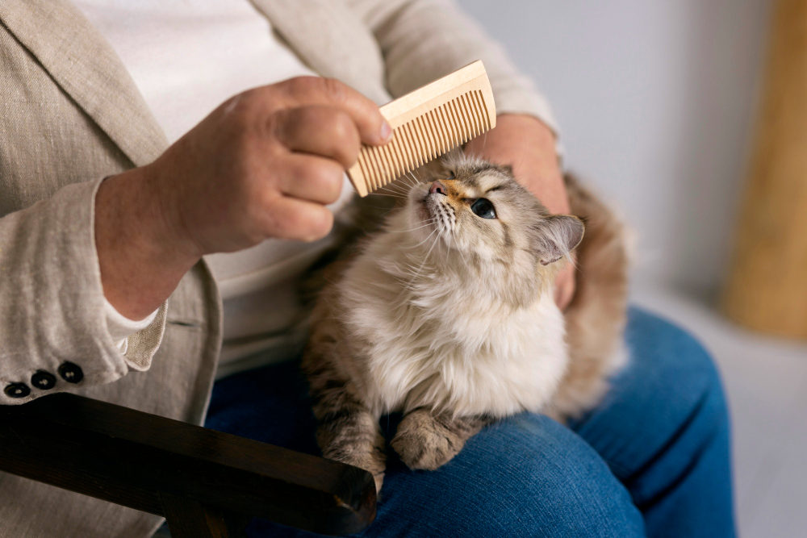
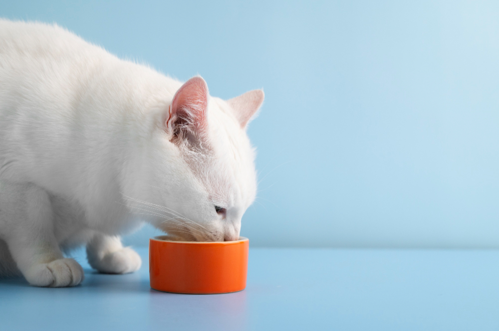
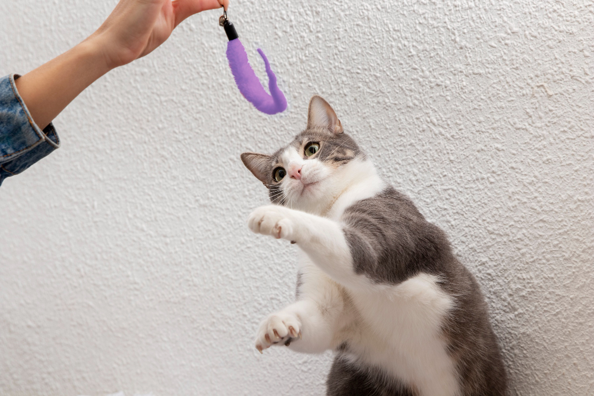

Раздел 1. Уход

Кошкам нужен регулярный уход:
-
во-первых, вычёсывать шерсть:
- длинношёрстных котов — каждые 3 дня,
- короткошёрстных — 1 раз в неделю.
-
во-вторых, не реже, чем раз в 3 три недели:
- обрезать когти,
- чистить уши и глаза.
К содержанию
Раздел 2. Питание

Основу рациона должны составлять мясные продукты.
-
Выбирать качественный корм, где первым ингредиентом указано мясо.
- Не давать еду со стола — особенно солёное и жареное.
- Следить за доступом к чистой воде.
К содержанию
Раздел 3. Игры

Игры помогают котам оставаться активными и снижать уровень стресса.
Лучшие игрушки:
- Удочки и мышки.
- Коробки и тоннели для пряток.
- Когтеточка с подвесными игрушками.
Рекомендуется:
- Играть с питомцем хотя бы 15 минут в день.
- Менять игрушки, чтобы не надоедали.
- Поощрять интерес лакомством.
К содержанию